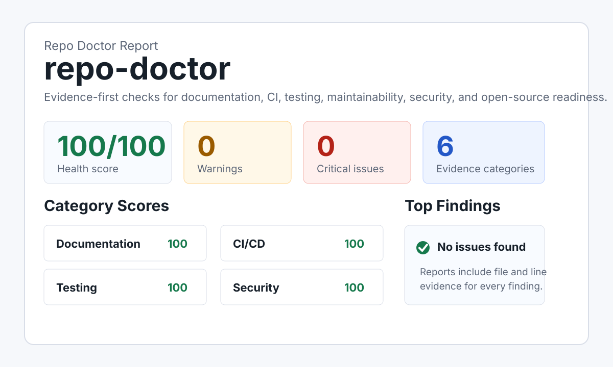

Docs
README setup, usage, testing, configuration, and script mismatch checks.
Scan a repository and get an evidence-based health report for docs, tests, CI, security hygiene, maintainability, and open-source readiness.

README setup, usage, testing, configuration, and script mismatch checks.
GitHub Actions presence, pull request validation, and test command detection.
Committed env files, missing security policy, dynamic execution, and hard-coded secret patterns.
node ./src/cli.js scan .
node ./src/cli.js scan https://github.com/owner/repo
node ./src/cli.js scan . --fail-under 75README references package scripts that do not exist.
Recommendation: add the script or update the README command.
README.md:42 package.json:8
Use the GitHub Action to publish the Markdown report on pull requests.
Generate a concise repair plan from report.json without inventing evidence.
Create missing templates, starter CI, and environment examples without overwriting files.